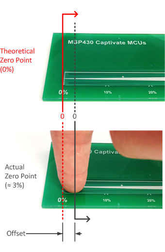

The slider trim parameter allows for the end points of a slider to be "pulled in," which has the effect compressing the slider. The desired operation of a slider is to have the left-most or top-most point be represented by position lowest possible value (0), and the right-most or bottom-most point be represented by the maximum possible value (the resolution of the slider - 1). Most slider layouts do not allow for this, since the centroid of a user's finger does not typically line up with the exact endpoint of the slider. This concept is illustrated in the example slider below.

This slider has a guide channel in the overlay material that limits the area of interaction with the sensor to the surface area of the electrodes. Notice that while zero is geometrically defined as the end of the slider, the user's finger does not ever touch directly on this point, since the size of the finger provides an offset that is roughly the radius of the finger. In addition, the algorithm treats the slider as an imaginary circle (like a wheel) where the endpoints are next to each other. Since the other end of the slider (the far end) is not near the close end being touched, there is no neighboring electrode to pull the position towards zero.
The slider upper and lower trim parameters provide a way to compensate for both of these factors by scaling the slider to match the desired interaction area.
Implementation Notes
To tune these parameters, touch a slider on the left-most (or top-most) side, and if the slider position output is not zero set the Lower_Trim parameter
to the value observed. Then touch the slider on the right-most (or bottom-most) side, and if the slider position is not equal to the slider's resolution - 1,
set the Upper_Trim parameter to the value observed. Then review the slider again. It may take a few iterations to obtain the desired performance.
Range of Valid Values for Slider Trim Parameters
Slider trim values must be between 0 and Desired_Resolution-1.
In addition, the lower trim must be less than the upper trim. To disable slider trim,
set the lower trim to 0 and the upper trim to the Desired_Resolution.
Affected Software Parameters
The Lower_Trim parameter corresponds to the ui16SliderLower member of the
tSliderSensorParams type in the CapTIvate Touch Library.
The Upper_Trim parameter corresponds to the ui16SliderUpper member of the
tSliderSensorParams type in the CapTIvate Touch Library.